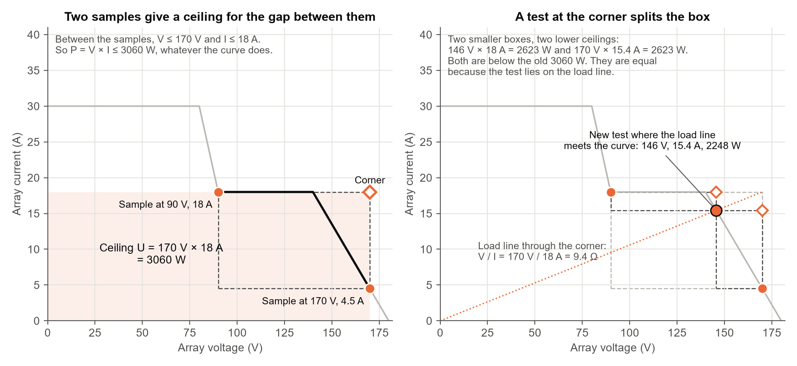

Idea C: the search that the measured ceiling guides
Part 1 ended with a gap. Piyavskii-Shubert gives a best-first search with a certificate, but it needs a slope bound \(K\) that a tracker does not know. Idea C keeps the loop and replaces the bound with one that the array itself guarantees. This part gives that bound, the search, the stages around it, the variant Idea B, and the source of every part. Idea C is an implementation of published parts, not a new method.
- Test both ends of the duty range and the middle: \(D=0.30,\ 0.54,\ 0.78\).
- For each gap between two neighbouring tests, calculate the ceiling: the higher voltage times the higher current.
- A gap is open if its ceiling is more than 1.02 × the best power. Test the open gap with the highest ceiling first, at its corner duty.
- Stop when no gap is open. The best test is then within 2 % of the highest power in the range, under the conditions of section 13.
- Hand over to the parabolic local stage. Search again only after a lasting power change of more than 5 %, or after 900 s.
0Idea C at a glance
The starting point. The DIRECT tracker of Nguyen and Low [13] searches the duty, then hands over to a local tracker when its two best samples are neighbours. That rule is a rule of thumb. At the hand-over, its samples cannot rule out a peak with much more power than the best one found (section 10).
The tool. Two tests and one physical fact, that the array current never rises with the voltage, bound the power of the whole gap between them. The bound needs no \(K\), no datasheet value and no model (section 1).
| Method | What it does | Final run, 24 Nov 2026 |
|---|---|---|
| Idea C (main) | Three seed tests, then best-first by the measured ceiling, with the corner split. Stops with a certificate | Wrong peak in 1 of 99 Simulink start-ups. 0.51 s per search |
| Idea B (variant) | The global stage of DIRECT, then the same ceiling check on all the DIRECT samples | Wrong peak in 2 of 99. 0.55 s per search |
| DIRECT (baseline) | As published [13], with no ceiling | Wrong peak in 26 of 99. 0.51 s per search |
How Idea C stops. It stops when no gap wider than \(\tau\) can beat the best test by more than \(\varepsilon_c\) (section 2). A cap of 64 tests backs this up. After the stop, the parabolic local stage holds the peak, and the restart rule starts a new search when the shading changes (sections 7 and 8).
Why Idea C and not Idea B. Both have the same stop test. Idea C has fewer settings, needs no array values, and in the final run it was equal or better on most measures (section 12).
How distinct it is. Every part exists in published work, and monotonic optimization has the whole structure in general form. The project found no GMPPT paper that applies it. The notes make no novelty claim (section 11).
1The measured ceiling
Two physical facts carry the whole argument:
- A1, monotone current. The array current \(I\) does not rise when the voltage \(V\) rises. Each series string with bypass diodes has this property, and parallel strings add their currents, so every series-parallel array has it.
- A2, monotone converter map. A higher duty gives a lower array voltage. For the ideal buck-boost into a resistive load, the input resistance falls as \(D\) rises:
- \(R(D)\) is the resistance that the array sees at duty \(D\), and \(R_L\) is the load resistance.
Lemma (Boztepe et al. [1], Wang, Li and Ruan [2]). Take two neighbouring tests at the duties \(d_1\lt d_2\). Under A1, A2 and settled readings, every duty in the gap gives
- \(V_1\) is the voltage at \(d_1\), the higher voltage of the two (by A2),
- \(I_2\) is the current at \(d_2\), the higher current of the two (by A1),
- \(U\) is the ceiling of the gap.
Proof. A2 gives \(V_2\le V(d)\le V_1\). Because \(V(d)\ge V_2\), A1 gives \(I(d)\le I_2\). Multiply: \(P(d)=V(d)\,I(d)\le V_1I_2\).
This is worst-case tolerance analysis. Every operating point of the gap lies in the box \(V_2\le V\le V_1,\ I_1\le I\le I_2\), and the largest power in that box is at its corner \((V_1,I_2)\). The bound is also tight: a current that stays at \(I_2\) up to just below \(V_1\) and then drops is allowed by A1, and it reaches a power just below \(V_1I_2\). A bypass diode that turns on gives a steep drop of this kind.
Conditions. Each reading must be settled, which is why a search test lasts 40 ms. The irradiance and the temperature must not change during the search. The sensors must be exact, or the test must be widened by the sensor error (delta_s).
The Lipschitz ceiling is \(P(c)+K\,d\): the measured value plus the steepest possible rise. The measured ceiling needs no \(K\). The physics of the array replaces the slope assumption. This is the problem knowledge that DIRECT does not use.
Figure 1. The I-V curve of a model string with three bypass groups at irradiances 1.0, 0.6 and 0.3. The two dots are tests at the duties \(d_1\) and \(d_2\). Every operating point of the gap (thick part of the curve) lies in the shaded box. The dashed curve is the hyperbola \(V\,I=V_1I_2\) through the box corner, so no point of the gap can have more power than the ceiling. Move the tests apart and the ceiling grows. Move them together and it falls toward the true power.
2The open test and the certificate stop
- \(P_{\mathrm{best}}\) is the highest tested power,
- \(\varepsilon_c=0.02\) sets how close to the best a gap may be and still be ignored,
- \(\tau=0.01\) of duty sets how narrow a gap may be and still be ignored.
Idea C stops when no gap is open. The tests then prove a bound on the true highest power \(P^*\) in the range, the certificate:
- the second term covers the narrow gaps, which the test does not check. The two gaps next to the best test are always among them, and the local stage then climbs that peak.
A search-and-rescue team works the same way. It does not stop when it is tired. It stops when every sector is either searched or proven too small to hide a person, and \(\varepsilon_c\) and \(\tau\) say what "too small" means. Idea C tests both ends of the range first, so its gaps cover the whole range. A gap that is closed is never tested.
The cap. The controller stores the tests in fixed arrays of 64 entries (Nmax), because code for Simulink Coder may not allocate memory at run time. If the arrays fill, the search ends at the best test. On a curve of constant power the test needs about \(\ln(V_{\max}/V_{\min})/\ln(1+\varepsilon_c)\approx\ln 6.7/\ln 1.02\approx96\) gaps, but real P-V curves are much cheaper: the 1800 random cases of the static study needed 24 tests at most.
3Best-first: Piyavskii-Shubert with a measured ceiling
Idea C splits the open gap with the highest ceiling first. This is the loop of Piyavskii [3] and Shubert [4] in part 1, section 4.3: test where the bound is highest, stop when no bound beats the best. The best-first order never splits a gap whose ceiling is below the true maximum, because such a gap can never hold the answer. Ibaraki shows that best-bound-first expands the fewest nodes of a fixed search tree [22].
LIPO is the same loop in GMPPT with a Lipschitz cone [5]. It needs the constant \(k\), tuned to 1500 in simulation for one plant. Idea C needs no constant: its ceiling comes from two measurements. On the test curve of part 1, Piyavskii-Shubert with a valid \(K\) needed 87 tests to stop, against 11 for Idea C (part 1, section 6).
4Where in the gap: the corner split
The point \((V_1,I_2)\) is the corner of the gap. It lies on the load line \(R^*=V_1/I_2\). A point with power near the ceiling can only lie near the duty where the array works on this load line, so that is the best single place to test:
- \(D^*\) is the corner duty of the ideal buck-boost,
- the controller does not need \(R_L\). It fits a straight line through the two ends of the gap in \((x,\ln R)\), with \(x=\ln\frac{1-D}{D}\), and solves it for \(\ln R^*\),
- \(D^*\) is clamped to \([d_1+\theta w,\ d_2-\theta w]\), with \(w=d_2-d_1\) and \(\theta=0.1\).
A test on the corner's load line at \((V^*,I^*)\) replaces the ceiling \(V_1I_2\) with two ceilings, \(V_1I^*\) and \(V^*I_2\). Both are lower than the old one, whatever the curve does, and they are equal because the test lies on the load line. Each split costs one new test, because the two new gaps share the end tests of the old one. A DIRECT trisection costs two tests per split. Reusing the end tests is a known property of splitting at end points in one dimension [18]-[20].
Source of the corner split: the projection step of the polyblock algorithm of monotonic optimization (Tuy [6]; Zhang, Qian and Huang [7], section 3.2).

Figure 2. Left: two tests at (90 V, 18 A) and (170 V, 4.5 A) give the ceiling 170 V × 18 A = 3060 W. Right: the test where the load line through the corner meets the curve splits the box. Both new ceilings are 2623 W. Idealized curve of part 3, for teaching.
5Idea C step by step
Figure 3 runs Idea C in duty on the model string of Figure 1. The corner split is the project form. The midpoint split is the first form of Idea C, kept for comparison.
Figure 3. Idea C on the model string. The thin curve is the true \(P(D)\), which the tracker never sees. Dots are tests, numbered in order. Each horizontal bar is the ceiling \(V_1I_2\) of one gap: open and highest (tested next), open, closed by the ceiling, narrower than \(\tau\). The dashed line is the open limit \((1+\varepsilon_c)P_{\mathrm{best}}\). A bar above the frame shows its ratio \(U/P_{\mathrm{best}}\) at the top. Try "two peaks within 2 %": the search must test both peaks before it can stop. Raise \(\varepsilon_c\) to 0.05 and it stops earlier, but the stop then no longer proves which of two close peaks is higher. The figure uses the closed-form corner duty, and the controller uses the fit of section 4.
6Parameters of the search
Field of mppt | Value | Meaning |
|---|---|---|
Dlo, Dhi | 0.30, 0.78 | Duty range of the search |
Tsearch | 40 ms | Length of one test. The last quarter is averaged |
eps_c | 0.02 | Margin of the open test |
tau | 0.01 | Smallest width of an open gap (duty) |
delta_s | 0 | Bound of the relative sensor error in the open test |
theta | 0.1 | Clamp of the corner split |
c_corner | 1 | 1 = corner split, 0 = midpoint split |
Nmax | 64 | Size of the test store |
7After the search: the parabolic local stage
The search ends with the best test on the right peak, but not on its top. The tests are at least \(\tau=0.01\) of duty apart, so the top lies between the best test and one of its neighbours. On the nine static patterns, the best test of Idea C was at 99.911 % of the global maximum on average, and at 99.703 % at worst. The local stage has three jobs:
- climb the last fraction of a percent with as few tests as possible,
- hold the top without the steady oscillation of P&O,
- follow slow changes of the light without a new search.
It does this in four phases. The first two run once after each search. The last two repeat until the restart rule of section 8 starts a new search.
Sources: parabolic prediction of Pai et al. [8], the procedure localmin of Brent [9], the drift-corrected measurement of Sera et al. [10], and the voltage hold of the two-loop trackers of Boztepe et al. [1] and Furtado et al. [11].
7.1 Fresh reading
The refinement uses the tests of the search, so it must first make sure that they still describe the curve. The first local period measures the best duty \(D_{\mathrm{best}}\) again. If the new power differs from the stored power by more than 1 % (chk_eps), the light changed during the search. The stored tests are then old, so the stage skips the refinement and goes to the check (7.4), which uses fresh readings only. The limit of 1 % is about five times the settling error of one test (0.21 %).
7.2 Refinement: a parabola through three tests
The idea. Near a smooth peak, \(P(D)\) is close to a parabola, because the first term of its Taylor series that is not zero is the square term. A parabola through three tests around the peak therefore points close to the top in one step. Pai et al. [8] use this for PV tracking.
The bracket costs no test. The search already holds the best test and its nearest neighbours on the duty axis. These three tests are the start points \((D_1,P_1)\), \((D_2,P_2)\), \((D_3,P_3)\), with \(D_2\) the best. If the best test has no neighbour on one side (it lies at the end of the range), the stage first makes one end test \(0.01\) of duty away (par_h). If that end test is better, the bracket shifts to that side. This is the shifting procedure of Pai et al. [8], section III-A.
The parabolic step. The top of the parabola through the three points is at
- \(D_2\) is the best point so far, \(D_1\) and \(D_3\) are the other two points of the fit,
- after each new test, the three best points of the bracket form the next fit (Brent [9], ch. 5, Eqs. (4.3) to (4.6)).
The safeguards. A pure parabolic step can fail. A kink of the curve (a bypass diode that switches) or sensor noise can put the top of the fit far away, or outside the bracket. The procedure localmin of Brent [9] guards against this. The controller implements it as published:
- Accept test. The parabolic step is used only if \(D^{*}\) lies inside the bracket and the step is shorter than half the step before the last one. The second condition makes sure that the steps get shorter.
- Golden-section step. Otherwise the next test goes into the larger part of the bracket, at \(0.382\) of its width from the best point. This step always shrinks the bracket by a fixed ratio, so the refinement cannot stall.
- Smallest distance. No test is nearer than \(0.001\) of duty (
par_tol) to a known point. Closer tests would differ by less than the measurement noise. - Stop. The refinement ends when the bracket reaches at most \(2\times0.001\) on each side of the best point, or after 3 tests (
par_kmax). The duty then goes to the best point, \(D_0\).
Each refinement test uses the timing of a search test (40 ms), because a duty step needs that time to settle.
7.3 Hold: keep the voltage, not the duty
The stage now holds the point for 1 s (chk_T). A fixed duty fixes the input resistance of the converter, \(R=V/I\). When the light falls on all panels, the current falls with it, so a fixed resistance drags the voltage down, away from the peak. The voltage of the peak, however, changes little with the light. The stage therefore holds the array voltage at \(V_0\), the voltage of the first hold period, as the voltage loop of a two-loop tracker does [1], [11].
For the ideal buck-boost, \(\ln R=\ln(\eta R_L)+2x\) with \(x=\ln\frac{1-D}{D}\). This is the relation of the corner split (section 4). If the current stays about constant over one period, a change of \(\ln V\) by \(\ln(V_0/V)\) needs a change of \(x\) by half of that:
- \(V\) is the voltage of the period that just ended,
- near the peak the current also changes with the voltage, so this step is smaller than the full correction and does not overshoot,
- the limit of 0.01 per period (
vh_max) stops a large jump on a sensor fault. No load value is used.
During the hold, the restart rule of section 8 watches the power in each period.
7.4 Check every second: five periods, corrected for drift
The voltage hold follows a change of light on all panels. It does not move the voltage when the top of the peak itself moves. The check finds such a shift. It runs five periods of 20 ms at the duties
and records the powers \(P_1\) to \(P_5\). Near a peak, a step of \(d=0.002\) changes the power by 0.01 % to 0.2 %. The light can change by as much during the 0.1 s of the check, so a direct comparison of the side powers with the centre power is not reliable. Sera et al. [10], Eq. (1), solve this with an extra centre measurement. Each side power is compared with the mean of the two centre powers around it:
- if the light changes at a constant rate, the mean of the two centre powers is the centre power at the time of the side test, so the drift cancels exactly,
- \(g_{+}\) and \(g_{-}\) are the gains of the two side duties over the centre, free of the drift.
A parabola \(c_2z^2+s_1z\) through \((-1,g_{-})\), \((0,0)\) and \((1,g_{+})\), with \(z\) in units of \(d\), gives the move:
- if \(c_2<0\) (the fit has a top) and the predicted gain \(\Delta P^{*}\) is more than \(10^{-4}P\) (
chk_db), \(D_0\) moves by \(z^{*}d\), at most \(2d\), - if \(c_2\ge0\) (no top in the fit), \(D_0\) moves one step \(d\) to the side with the higher gain, if that gain is more than \(10^{-4}P\),
- if the move reached its limit, the top is further away, and the next check follows at once, not after 1 s. Far from the top, the stage then moves \(2d\) every 0.1 s. This rule is a choice of this project,
- the dead band \(10^{-4}P\) is far below the restart level of 5 % of section 8, so a move of the check can never start a new search.
Figure 4. One check with round numbers. The light rises by 0.2 W per period (dashed line through the three centre powers). The true top is one step \(d\) above \(D_0\). Corrected gains: \(g_{+}=1000.4-1000.2=0.2\) W and \(g_{-}=1000.0-1000.6=-0.6\) W, so \(c_2=-0.2\), \(s_1=0.4\), \(z^{*}=1\) and \(\Delta P^{*}=0.2\) W. The gain is above the dead band (0.1 W), so \(D_0\) moves one step \(d\) to the true top. If the sides were compared with \(P_3\) alone, the gains would be \(0\) and \(-0.4\) W. The fit would then give \(z^{*}=0.5\) and \(\Delta P^{*}=0.05\) W, below the dead band, so the drift would hide the gain and the check would not move.
The search finds the right peak, and the local stage finishes it. The refinement starts from the tests of the search, so it costs at most three new tests. The hold keeps the voltage of the peak with no test at all. The check costs 0.1 s per second and removes the effect of a steady change of light. The correction is exact only for a change at a constant rate. Section 13 states the case where the plant does not settle within one check period.
Field of mppt | Value | Meaning |
|---|---|---|
chk_eps | 0.01 | Fresh reading: larger change means the stored tests are old |
par_h | 0.01 | Distance of the end test if the best test has no neighbour (duty) |
par_tol | 0.001 | Smallest distance between two tests of the refinement (duty) |
par_kmax | 3 | Most tests of the refinement |
vh_max | 0.01 | Largest duty move of the voltage hold in one period |
chk_T | 1 s | Hold time between two checks |
chk_d | 0.002 | Duty step of the check |
chk_db | 10⁻⁴ | Dead band of the check, as a fraction of \(P\) |
The values are start values from the static analysis, not tuned values (src/config/pv4x4_config.m).
8When to search again: the restart rule
The certificate holds only for the curve that Idea C measured. When the shading changes, Idea C must search again, but each search costs energy. The restart rule decides when.
| Part | Rule | Source |
|---|---|---|
| Level test | \(|P-P_{\mathrm{ref}}|\gt 0.05\,P_{\mathrm{ref}}\). \(P_{\mathrm{ref}}\) is the power at the first steady state after the hand-over | Wang et al. [2], Eq. (7). Furtado et al. [11] |
| Steady state | The level test runs only when the slope of a least-squares line through the last 10 periods (0.2 s) is at most 0.02 % of \(P\) per period | Boztepe et al. [1] |
| Power floor | The level test is off below 260 W (5 % of the rated power) and on again above 286 W | Choice of this project (24 Nov 2026). At low power, the same effect as the absolute threshold of Furtado et al. [11] |
| Timer | A new search after 900 s of local tracking | Wang et al. [2]. Koutroulis and Blaabjerg [12] |
The steady-state test also protects the ceiling: a search starts only when the light is steady, which is condition 2 of the lemma. The power floor stops the false searches of dawn and dusk. Over four full days it cut the searches of Idea C from 8413 to 521 and raised the energy from 99.779 % to 99.968 % of the GMPP energy, with no change on the steps that need a search.
9Idea B: the variant
Idea B keeps the DIRECT tracker and adds the ceiling as a final check. DIRECT works as a scout that covers the range quickly. The check works as an inspector that walks the gaps between the scout's flags and asks of each one: "can this gap still beat the best flag?" Only the gaps that can are tested. The final tests use the refined form (mppt.alg = 4):
- Run the global stage of DIRECT as published [13]: first samples, shading test, global cycles with the skip rules.
- Do not run the extra global cycles after the neighbour test, nor the local stage of DIRECT. The check makes both redundant.
- Treat the two margins outside the DIRECT samples as gaps. Their ceilings use the rated \(V_{oc}=183.2\) V and \(I_{sc}=36.44\) A, because the DIRECT samples do not reach the ends of the range.
- Run the ceiling check of sections 2 to 4 on all the samples, with the corner split, until no gap is open.
- Hand over to the parabolic local stage at the best sample.
A wrong decision of the DIRECT stage, in the shading test or in a skip rule, costs tests, not correctness: the check calculates a ceiling for every gap, also for the gaps that DIRECT skipped. In the static study of November 2026 (900 random cases, no noise), the refined form needed 12.7 tests on average against 14.4 for the first form of Idea B, with the same certificate.
10What Idea C borrows, and how it closes the gaps of DIRECT trackers
Every structural part of Idea C has a published source:
| Part | Source | Idea C | Idea B |
|---|---|---|---|
| The ceiling \(P\le V_1I_2\) | Boztepe et al. [1], Wang, Li and Ruan [2] | yes | yes |
| Test where the ceiling is highest, stop when no ceiling beats the best | Piyavskii [3], Shubert [4]. In GMPPT: LIPO [5], PRISM [16] | yes | yes |
| Certificate from a monotone bound | Monotonic optimization [6], mixed monotonic programming [21] | yes | yes |
| Corner split | Polyblock projection step [6], [7] | yes | yes |
| Splits that reuse the end tests | Chiter [18], BIRECT [19], HALRECT [20] | yes | no |
| Binary search in duty under partial shading | Tiong et al. [17] (conference paper) | yes | no |
| Seeds at the low, middle and high duty | PRISM [16], the first samples of [13] | yes | no |
| DIRECT global stage, shading test, skip rules | Jones et al. [23], Nguyen and Low [13] | no | yes |
| Parabolic local stage | Pai et al. [8], Brent [9], Sera et al. [10] | yes | yes |
| Restart on a power change and on a timer | [1], [2], [11], [12] | yes | yes |
The published DIRECT trackers leave three gaps. The table gives the evidence and the answer of each idea.
| Gap of the DIRECT trackers | Evidence | Answer of Idea C | Answer of Idea B |
|---|---|---|---|
| No statement at the stop | Nguyen and Low stop when the two best samples are neighbours, a rule of thumb [13]. Static study: at the DIRECT hand-over the samples could not exclude a point with up to 37 % more power than the best one (900 random cases). Final run: wrong peak in 26 of 99 start-ups | The certificate stop, from the first test | The certificate check, added before the hand-over |
| The bounds that exist need a constant, a model or a datasheet | Lipschitz bounds need \(K\) (Khong et al. [15], LIPO [5]). Skip rules use the rated \(V_{oc}\) and \(I_{sc}\), which drift with temperature, ageing and soiling. PRISM needs a calibrated I-V model [16] | A measured ceiling only. No array values | A measured ceiling, but the DIRECT stage and the margins still use the rated \(V_{oc}\) and \(I_{sc}\) |
| DIRECT ignores the physics | Better behaviour needs problem knowledge that bounds subregions [14] | Both use A1: the current never rises with the voltage | |
11How distinct is Idea C?
| Feature | Who has it | Idea C |
|---|---|---|
| Ceiling from two measured neighbours | Partly: Boztepe [1] and Wang [2] use one sample and the best power, in a one-way scan | yes |
| No constant, model or datasheet value | Nguyen and Low (no bound at all), Tiong (no bound) | yes |
| Best-first by a bound | LIPO [5], PRISM [16] | yes |
| Stop with a certificate | Khong [15] (Lipschitz), PRISM [16] (model) | yes, from measurements only |
| The whole combination, in GMPPT | No GMPPT paper found | yes |
| The whole combination, in optimization | Monotonic optimization [6], [7], [21] | the same structure |
Every part exists on its own, and monotonic optimization has the whole structure in general form. What the project did not find in the GMPPT literature is that theory applied to a duty-controlled converter, where one duty setting does the polyblock projection. The work of the project is that application, its implementation for Simulink Coder on the 4 × 4 Emmvee E325P72 array model, and its test against four baselines in Simulink and on the static bench. Idea C was reached independently in this project. That does not make its structure new.
Idea C: "We implement a best-first search of the Piyavskii-Shubert type, as LIPO does for GMPPT, with the measured ceiling of Boztepe et al. and Wang et al. in place of the Lipschitz bound, and with the corner split of monotonic optimization."
Idea B: "We implement the DIRECT-based GMPPT of Nguyen and Low (2010). Before the hand-over, we add a check from the scan-and-skip literature (Boztepe et al. 2014, Wang et al. 2016): the power between two neighbouring samples cannot exceed V(left) × I(right)."
Do not write "novel", "first" or "proposed method" for either one.
12Idea B or Idea C: which is more robust?
Both end with the same stop test and rest on the same assumptions, so both are exposed in the same way when an assumption fails. The final run measured the rest:
| Measure (final run, 24 Nov 2026) | Idea C | Idea B |
|---|---|---|
| Wrong peak, Simulink start-ups | 1 of 99 | 2 of 99 |
| Wrong peak, static start-ups | 0.78 % | 1.09 % |
| Search time | 0.51 s | 0.55 s |
| EN 50530, mean of the rows | 99.52 % | 99.51 % |
| Cloud events, Simulink: mean / worst | 98.72 / 94.28 % | 98.68 / 93.57 % |
| Pattern steps: wrong / not recovered of 100 | 6 / 7 | 6 / 7 |
| Pattern steps at 30 × sensor noise | 96.14 % | 96.53 % |
| Four days, open sky | 99.968 % | 99.962 % |
| Energy per search | 6.4 µJ | 6.2 µJ |
Why Idea C is more robust in the long run.
- Fewer settings. Idea C has \(\varepsilon_c\) and \(\tau\). Idea B adds the shading thresholds and the skip rules of DIRECT, with the rated \(V_{oc}\) and \(I_{sc}\).
- No drift. The real \(V_{oc}\) and \(I_{sc}\) drift with temperature, ageing and soiling. The DIRECT stage of Idea B then spends its tests less well. It stays correct, but it becomes slower.
- Simpler and portable. Idea C has one path to the hand-over and needs no array values. Idea B needs the \(V_{oc}\) and \(I_{sc}\) of each new array.
- Faster. In the first static study Idea B was faster after each restart. In the final run, with the corner split in both, Idea C is the faster one: 0.51 s against 0.55 s.
Where Idea B is better. At 30 times the datasheet sensor noise it keeps 0.4 points more efficiency on the pattern steps, and its search costs 0.2 µJ less computation.
Limit. "Long run" here is reasoning, not data. The project has no test of ageing, of temperature drift or on hardware. The recommendation is Idea C as the main method, with Idea B reported as a variant that shows the ceiling also repairs the DIRECT tracker.
13Conditions and known limits
- The ceiling holds only with steady light during the search, a settled reading at each test and exact sensors. The restart rule starts a search only when the power is steady.
- The settling error of one test (0.21 % in the worst case) acts as a sensor error.
- In Simulink, Idea C loses 0.27 points on the cloud events against the static bench (98.72 % against 98.99 %). DIRECT, with no parabolic check, loses 0.03 points. On slow and deep cloud edges, the plant does not settle within one 20 ms check period. The settling error (about 0.2 %) is larger than the signal of the check, so the check follows the moving peak at half speed. Two fixes were tested and rejected. The final report states this as a finding.
ReferencesSources of this part
- M. Boztepe, F. Guinjoan, G. Velasco-Quesada, S. Silvestre, A. Chouder and E. Karatepe, “Global MPPT scheme for photovoltaic string inverters based on restricted voltage window search algorithm,” IEEE Trans. Ind. Electron., vol. 61, no. 7, pp. 3302-3312, 2014.
- Y. Wang, Y. Li and X. Ruan, “High-accuracy and fast-speed MPPT methods for PV string under partially shaded conditions,” IEEE Trans. Ind. Electron., vol. 63, no. 1, pp. 235-245, 2016.
- S. A. Piyavskii, “An algorithm for finding the absolute extremum of a function,” USSR Comput. Math. Math. Phys., vol. 12, no. 4, pp. 57-67, 1972.
- B. O. Shubert, “A sequential method seeking the global maximum of a function,” SIAM J. Numer. Anal., vol. 9, no. 3, pp. 379-388, 1972.
- W. Li, G. Zhang, T. Pan, Z. Zhang, Y. Geng and J. Wang, “A Lipschitz optimization-based MPPT algorithm for photovoltaic system under partial shading condition,” IEEE Access, vol. 7, pp. 126323-126333, 2019.
- H. Tuy, “Monotonic optimization: problems and solution approaches,” SIAM J. Optim., vol. 11, no. 2, pp. 464-494, 2000.
- Y. J. Zhang, L. Qian and J. Huang, “Monotonic optimization in communication and networking systems,” Found. Trends Netw., vol. 7, no. 1, pp. 1-75, 2012.
- F.-S. Pai, R.-M. Chao, S. H. Ko and T.-S. Lee, “Performance evaluation of parabolic prediction to maximum power point tracking for PV array,” IEEE Trans. Sustain. Energy, vol. 2, no. 1, pp. 60-68, 2011.
- R. P. Brent, Algorithms for Minimization without Derivatives. Englewood Cliffs, NJ: Prentice-Hall, 1973, ch. 5 (book).
- D. Sera, R. Teodorescu, J. Hantschel and M. Knoll, “Optimized maximum power point tracker for fast-changing environmental conditions,” IEEE Trans. Ind. Electron., vol. 55, no. 7, pp. 2629-2637, 2008.
- A. M. S. Furtado, F. Bradaschia, M. C. Cavalcanti and L. R. Limongi, “A reduced voltage range global maximum power point tracking algorithm for photovoltaic systems under partial shading conditions,” IEEE Trans. Ind. Electron., vol. 65, no. 4, pp. 3252-3262, 2018.
- E. Koutroulis and F. Blaabjerg, “A new technique for tracking the global maximum power point of PV arrays operating under partial-shading conditions,” IEEE J. Photovolt., vol. 2, no. 2, pp. 184-190, 2012.
- T. L. Nguyen and K.-S. Low, “A global maximum power point tracking scheme employing DIRECT search algorithm for photovoltaic systems,” IEEE Trans. Ind. Electron., vol. 57, no. 10, pp. 3456-3467, 2010.
- D. R. Jones and J. R. R. A. Martins, “The DIRECT algorithm: 25 years later,” J. Global Optim., vol. 79, no. 3, pp. 521-566, 2021.
- S. Z. Khong, D. Nešić, C. Manzie and Y. Tan, “Multidimensional global extremum seeking via the DIRECT optimisation algorithm,” Automatica, vol. 49, no. 7, pp. 1970-1978, 2013.
- M. Abujarad, K. K. Mohammed, S. Mekhilef, M. B. Mubin and K. S. Tey, “Accelerated global MPPT under partial shading: a physics-regularized I-V search with logistic modeling and search space exclusion,” IEEE Trans. Power Electron., vol. 41, no. 11, pp. 18784-18797, 2026.
- M. C. Tiong, H. Daniyal, M. H. Sulaiman and M. S. Bakar, “Binary search algorithm as maximum power point tracking technique for photovoltaic system under partial shaded conditions,” in Proc. IEEE CENCON, pp. 10-14, 2017 (conference paper).
- L. Chiter, “A new sampling method in the DIRECT algorithm,” Appl. Math. Comput., 2005.
- R. Paulavičius, L. Chiter and J. Žilinskas, “Global optimization based on bisection of rectangles, function values at diagonals, and a set of Lipschitz constants,” J. Glob. Optim., vol. 71, no. 1, pp. 5-20, 2018.
- L. Stripinis and R. Paulavičius, “Lipschitz-inspired HALRECT algorithm for derivative-free global optimization,” J. Glob. Optim., vol. 88, no. 1, pp. 139-169, 2024.
- B. Matthiesen, C. Hellings, E. A. Jorswieck and W. Utschick, “Mixed monotonic programming for fast global optimization,” IEEE Trans. Signal Process., vol. 68, pp. 2529-2544, 2020.
- T. Ibaraki, “Theoretical comparisons of search strategies in branch-and-bound algorithms,” Int. J. Comput. Inf. Sci., vol. 5, no. 4, pp. 315-344, 1976.
- D. R. Jones, C. D. Perttunen and B. E. Stuckman, “Lipschitzian optimization without the Lipschitz constant,” J. Optim. Theory Appl., vol. 79, no. 1, pp. 157-181, 1993.
Figures 1 and 3 use a model string of three bypass groups, not the 4 × 4 project array, so their numbers illustrate the method only. The numbers of the static study come from docs/research/novelty_check_ideas_B_C.md and the notes of November 2026.